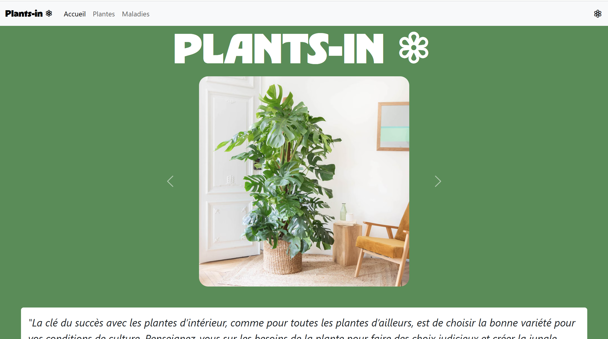

Blog passion
Blog statique consacré aux plantes d’intérieur, développé en HTML et
entièrement mis en forme avec Bootstrap.
Le site propose plusieurs sections illustrées, des carrousels
d’images, des cartes de contenu et une FAQ interactive utilisant les
composants dynamiques de Bootstrap. Ce projet est majoritairement
statique, mais il intègre un script JavaScript permettant d’injecter
automatiquement un header et un footer sur chaque page afin de
centraliser la structure.

 Retour
Retour